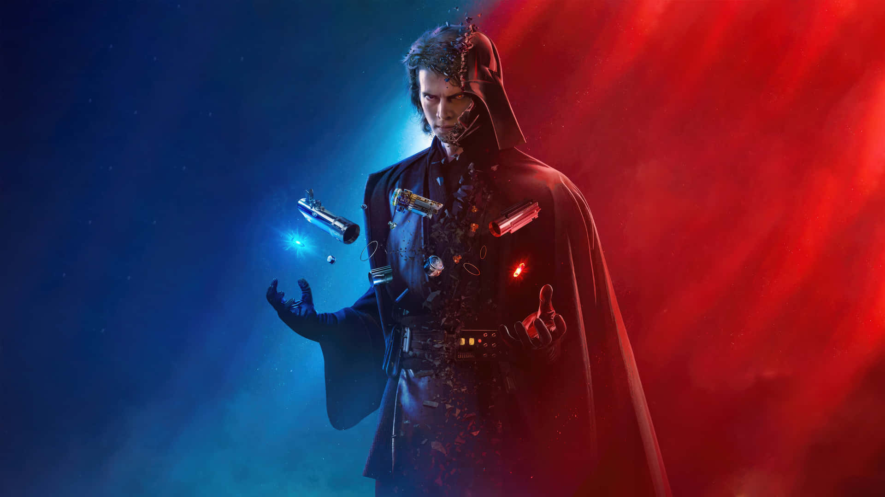

Tentang Anakin Skywalker
Anakin Skywalker adalah seorang tokoh penting dalam sejarah galaksi Star Wars. Lahir sebagai budak di Tatooine, ia ditemukan oleh Jedi Qui-Gon Jinn yang yakin bahwa Anakin adalah "The Chosen One" — seseorang yang akan membawa keseimbangan pada Force. Seiring bertumbuh, ia menunjukkan bakat luar biasa dalam bertarung dan berhubungan dengan Force.
Anakin dikenal karena keberaniannya di medan perang selama Clone Wars. Namun, rasa takut kehilangan orang yang dicintainya, terutama Padmé Amidala, membuatnya rentan terhadap bujukan sisi gelap. Ia akhirnya jatuh ke pengaruh Palpatine dan menjadi Darth Vader, menghancurkan Jedi Temple dan sahabatnya sendiri, Obi-Wan Kenobi.
Tapi kisahnya tak berakhir sebagai penjahat. Anakin akhirnya ditebus oleh anaknya, Luke Skywalker, dan kembali ke sisi terang sebelum meninggal. Kisah hidupnya adalah simbol dari konflik, kehancuran, dan penebusan dalam skala galaksi.
Galeri Anakin Skywalker
